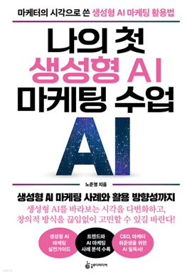

학습 목표
- 1. 생성형 AI의 기본적인 개념과 마케팅 영역에서의 역할 및 중요성을 이해할 수 있다.
- 2. 생성형 AI를 활용한 마케팅 전략 수립 및 실무 적용 방안을 습득할 수 있다.
- 3. 브랜딩, 개인화 마케팅, 콘텐츠 제작 등 다양한 마케팅 활동에 AI를 효과적으로 접목하는 방법을 배울 수 있다.
- 4. 생성형 AI와의 효율적인 소통을 위한 프롬프트 활용 기초 기술을 익힐 수 있다.
교육 특징
-
1. 전문 강사의 풍부한 현장 경험과 노하우 전수
오랜 마케팅 강의 경험을 바탕으로, 많은 마케팅 프로젝트에서 공통적으로 발생하는 문제점들을 짚어주며 해결책 제공
-
2. 개념부터 실전까지, 체계적인 커리큘럼 제공
생성형 AI의 개념을 명확히 이해하는 것부터 시작해, 마케팅 전략 수립, 브랜딩, 콘텐츠 제작, 프롬프트 활용법까지 실무에 필요한 모든 과정을 단계별로 다룸
-
3. 마케팅의 핵심을 꿰뚫는 전략적 접근법 제시
복사-붙여넣기식의 단편적인 프롬프트 활용이 아닌, 상황과 니즈에 맞춰 AI와 소통하는 기초적이고 전략적인 방향성을 제시
교육 대상
- 1. 마케팅/기획 분야에서 생성형 AI 활용법에 대한 기초 지식이 필요한 실무자
- 2. 마케팅 효율을 높이고, 리스크를 줄이며 전략적인 접근을 원하는 담당자
강의 목차
- 제1장 생성형 AI, 무엇이고 왜 주목받는가? 생성형 AI의 세계로 초대
- 제2장 왜 지금, 생성형 AI 마케팅인가? 놓칠 수 없는 이유 3가지
- 제3장 마케팅의 판을 바꾸는 생성형 AI 4가지 필살 전략
- 제4장 생성형 AI로 짜는 마케팅 전략, 이렇게 시작하자! 4가지 핵심 키워드
- 제5장 생성형 AI로 브랜드에 영혼을, 차별화 브랜딩 3가지 포인트
- 제6장 생성형 AI가 만드는 차원이 다른 개인화 마케팅
- 제7장 생성형 AI 손으로 빚어낸 매력적인 콘텐츠의 비밀
- 제8장 생성형 AI와 대화하는 기술, 프롬프트 활용 기법
강사 소개
강사명
노준영
경력
2009~2015 대중문화평론가 활동
2010. 엠넷(CJ E&M) 팝콘으로 구성작가 데뷔
2013. 케이팝 매거진 위니케이스타 및 더 케이팝 편집장
경기도 사회서비스원 부천종합재가센터 운영위원
한국생산성본부 마케팅 교수
2023년 알파세대가 온다
2024년 요즘 소비 트렌드 2025
2025년 나의 첫 생성형 AI 마케팅 수업
2010. 엠넷(CJ E&M) 팝콘으로 구성작가 데뷔
2013. 케이팝 매거진 위니케이스타 및 더 케이팝 편집장
경기도 사회서비스원 부천종합재가센터 운영위원
한국생산성본부 마케팅 교수
2023년 알파세대가 온다
2024년 요즘 소비 트렌드 2025
2025년 나의 첫 생성형 AI 마케팅 수업
참고 도서

도서명
나의 첫 생성형 AI 마케팅 수업
저자명
노준영
도서소개
이 책은 생성형 AI에 대해 잘 알지만 활용 방안을 몰라 저평가하거나 뻔하게 활용하는 문제를 해결하기
위해 쓰였습니다. 생성형 AI 마케팅에 대한 체계적인 활용 방향성과 통찰을 제공합니다. 1부 트렌드 및 사례 분석과 2부 실무 활용 파트를 통해
학습자가 탄탄한 지식을 더 나은 실무로 연결하고 자신만의 통찰을 쌓아 올릴 수 있도록 이끌어줍니다.